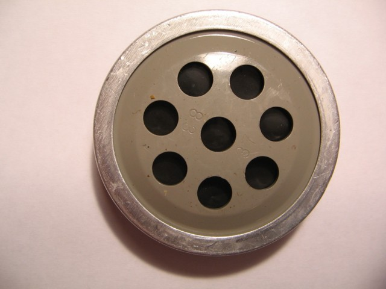
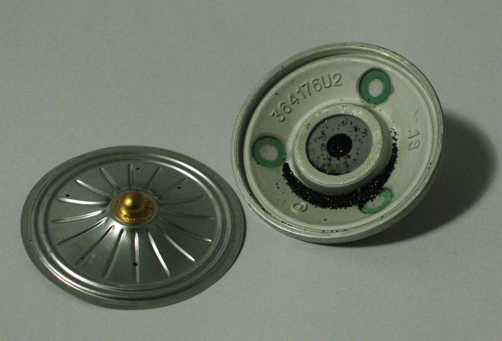

The Carbon Microphone
The carbon microphone, also known as carbon button microphone, button microphone, or carbon transmitter, is a type of microphone, a transducer that converts sound to an electrical audio signal. It consists of two metal plates separated by granules of carbon. One plate is very thin and faces toward the speaking person, acting as a diaphragm. Sound waves striking the diaphragm cause it to vibrate, exerting a varying pressure on the granules, which in turn changes the electrical resistance between the plates. Higher pressure lowers the resistance as the granules are pushed closer together. A steady direct current is passed between the plates through the granules. The varying resistance results in a modulation of the current, creating a varying electric current that reproduces the varying pressure of the sound wave. In telephony, this undulating current is directly passed through the telephone wires to the central office. In public address systems it is amplified by an audio amplifier. The frequency response of most carbon microphones, however, are limited to a narrow range, and the device produces significant electrical noise.
Before the proliferation of vacuum tube amplifiers in the 1920s, carbon microphones were the only practical means of obtaining high-level audio signals. They were widely used in telephone systems until the 1980s, while other applications used different microphone designs much earlier. Their low cost, inherently high output and frequency response characteristic were well suited for telephony. For plain old telephone service (POTS), carbon-microphone based telephones can still be used without modification. Carbon microphones, usually modified telephone transmitters, were widely used in early AM radio broadcasting systems, but their limited frequency response, as well as a fairly high noise level, led to their abandonment in those applications by the late 1920s. They continued to be widely used for low-end public address, and military and amateur radio applications for some decades afterward.